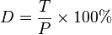

Nota
Ciao, benvenuto nella SunFounder Raspberry Pi & Arduino & ESP32 Enthusiasts Community su Facebook! Approfondisci Raspberry Pi, Arduino e ESP32 insieme ad altri appassionati.
Perché Unirti a Noi?
Supporto Esperto: Risolvi problematiche post-vendita e sfide tecniche con l’aiuto della nostra community e del nostro team.
Impara & Condividi: Scambia suggerimenti e tutorial per migliorare le tue abilità.
Anteprime Esclusive: Accedi in anteprima agli annunci dei nuovi prodotti.
Sconti Speciali: Approfitta di sconti esclusivi sui nostri ultimi prodotti.
Promozioni e Giveaway Festivi: Partecipa ai giveaway e alle promozioni delle festività.
üëâ Pronto a esplorare e creare con noi? Clicca [Qui] e unisciti subito!
1.1.2 LED RGB
Introduzione
In questa lezione impareremo a utilizzare un LED RGB per creare una serie di colori lampeggianti.
Componenti

Principio
PWM
La modulazione della larghezza dell’impulso, o PWM, è una tecnica per ottenere risultati analogici con mezzi digitali. Il controllo digitale crea un’onda quadra, un segnale che passa da acceso a spento. Variando la percentuale di tempo in cui il segnale è attivo rispetto a quello in cui è inattivo, si simula una tensione tra 0 e 5 Volt. Questo permette, ad esempio, di controllare la luminosità di un LED.
Ciclo di lavoro
Il ciclo di lavoro indica la percentuale di tempo in cui un segnale è attivo in un dato periodo. La formula per calcolarlo è:
{kind=link}
Dove D è il ciclo di lavoro, T è il tempo in cui il segnale è attivo, e P è il periodo totale del segnale. Un ciclo del 60% significa che il segnale è acceso il 60% del tempo e spento il 40%.

LED RGB

Le tre componenti di base dell’RGB LED (rosso, verde, blu) possono combinarsi per creare vari colori in base alla luminosità di ogni colore. La luminosità può essere controllata con il PWM. Raspberry Pi ha un solo canale per il PWM hardware, ma per controllare un LED RGB sono necessari tre canali. La libreria softPwm permette di simulare PWM per ottenere più uscite PWM in grado di controllare i LED RGB e creare vari colori.
Schema del circuito
Collega i pin R, G e B tramite un resistore limitatore di corrente ai pin GPIO17, GPIO18 e GPIO27. Il pin più lungo del LED (GND) si collega al GND del Raspberry Pi. Variando i valori PWM sui tre pin, il LED RGB visualizzerà diversi colori.
T-Board Name |
physical |
wiringPi |
BCM |
GPIO17 |
Pin 11 |
0 |
17 |
GPIO18 |
Pin 12 |
1 |
18 |
GPIO27 |
Pin 13 |
2 |
27 |

Procedura Sperimentale
Passo 1: Montare il circuito.

Per Utenti del Linguaggio C
Passo 2: Vai alla cartella del codice.
cd ~/davinci-kit-for-raspberry-pi/c/1.1.2/
Passo 3: Compila il codice.
gcc 1.1.2_rgbLed.c -lwiringPi
Nota
Quando esegui il comando «gcc», se non si specifica «-o», il file eseguibile generato avrà il nome predefinito «a.out».
Passo 4: Esegui il file eseguibile.
sudo ./a.out
Dopo l’esecuzione del codice, il LED RGB mostrerà una sequenza di colori: rosso, verde, blu, giallo, rosa e ciano.
Nota
Se il programma non funziona o compare l’errore «wiringPi.h: No such file or directory», consulta la sezione Il codice C non funziona?.
Codice .. code-block:: c
#include <wiringPi.h> #include <softPwm.h> #include <stdio.h> #define uchar unsigned char #define LedPinRed 0 #define LedPinGreen 1 #define LedPinBlue 2
- void ledInit(void){
softPwmCreate(LedPinRed, 0, 100); softPwmCreate(LedPinGreen,0, 100); softPwmCreate(LedPinBlue, 0, 100);
}
- void ledColorSet(uchar r_val, uchar g_val, uchar b_val){
softPwmWrite(LedPinRed, r_val); softPwmWrite(LedPinGreen, g_val); softPwmWrite(LedPinBlue, b_val);
}
int main(void){
- if(wiringPiSetup() == -1){ //when initialize wiring failed, printf messageto screen
printf(«setup wiringPi failed !»); return 1;
}
ledInit(); while(1){
printf(«Redn»); ledColorSet(0xff,0x00,0x00); //red delay(500); printf(«Greenn»); ledColorSet(0x00,0xff,0x00); //green delay(500); printf(«Bluen»); ledColorSet(0x00,0x00,0xff); //blue delay(500); printf(«Yellown»); ledColorSet(0xff,0xff,0x00); //yellow delay(500); printf(«Purplen»); ledColorSet(0xff,0x00,0xff); //purple delay(500); printf(«Cyann»); ledColorSet(0xc0,0xff,0x3e); //cyan delay(500);
} return 0;
}
Spiegazione del Codice
#include <softPwm.h>
Libreria utilizzata per realizzare la funzione PWM tramite software.
void ledInit(void){
softPwmCreate(LedPinRed, 0, 100);
softPwmCreate(LedPinGreen,0, 100);
softPwmCreate(LedPinBlue, 0, 100);
}
Questa funzione serve a creare un pin PWM con il software, impostando il periodo tra 0x100us e 100x100us.
Il prototipo della funzione softPwmCreate(LedPinRed, 0, 100) è il seguente:
int softPwmCreate(int pin,int initialValue,int pwmRange);
Parametro pin: Qualsiasi pin GPIO del Raspberry Pi può essere impostato come pin PWM.
Parametro initialValue: La larghezza iniziale dell’impulso è initialValue moltiplicato per 100us.
Parametro pwmRange: Il periodo del PWM è pwmRange moltiplicato per 100us.
void ledColorSet(uchar r_val, uchar g_val, uchar b_val){
softPwmWrite(LedPinRed, r_val);
softPwmWrite(LedPinGreen, g_val);
softPwmWrite(LedPinBlue, b_val);
}
Questa funzione imposta i colori del LED RGB. Il parametro r_val rappresenta la luminosità del LED rosso, g_val quella del verde e b_val quella del blu.
Il prototipo della funzione softPwmWrite(LedPinBlue, b_val) è il seguente:
void softPwmWrite (int pin, int value);
Parametro pin: Qualsiasi pin GPIO del Raspberry Pi può essere impostato come pin PWM.
Parametro value: La larghezza dell’impulso del PWM è pari a value moltiplicato per 100us. Nota che il valore deve essere inferiore a pwmRange definito in precedenza; se supera pwmRange, value sarà impostato su pwmRange.
ledColorSet(0xff,0x00,0x00);
Richiama la funzione definita sopra. Imposta LedPinRed su 0xff e LedPinGreen e LedPinBlue su 0x00. Solo il LED rosso si accende. Per accendere i LED di altri colori, basta modificare i parametri.
Per gli utenti del linguaggio Python
Passaggio 2: Apri il file di codice.
cd ~/davinci-kit-for-raspberry-pi/python
Passaggio 3: Esegui.
sudo python3 1.1.2_rgbLed.py
Dopo l’esecuzione del codice, vedrai che il LED RGB visualizza i colori rosso, verde, blu, giallo, rosa e ciano.
Codice
Nota
Puoi Modificare/Reimpostare/Copiare/Eseguire/Interrompere il codice qui sotto. Prima di farlo, assicurati di trovarti nel percorso del codice sorgente, ad esempio davinci-kit-for-raspberry-pi/python.
import RPi.GPIO as GPIO
import time
# Imposta una tabella colori in esadecimale
COLOR = [0xFF0000, 0x00FF00, 0x0000FF, 0xFFFF00, 0xFF00FF, 0x00FFFF]
# Assegna i canali dei pin tramite un dizionario
pins = {'Red':17, 'Green':18, 'Blue':27}
def setup():
global p_R, p_G, p_B
# Configura i pin GPIO in modalità BCM
GPIO.setmode(GPIO.BCM)
# Imposta tutti i LedPin in modalità output e livello iniziale alto (3.3V)
for i in pins:
GPIO.setup(pins[i], GPIO.OUT, initial=GPIO.HIGH)
# Imposta tutti i LED come canali PWM con frequenza a 2KHz
p_R = GPIO.PWM(pins['Red'], 2000)
p_G = GPIO.PWM(pins['Green'], 2000)
p_B = GPIO.PWM(pins['Blue'], 2000)
# Inizia con valore 0 su tutti i LED
p_R.start(0)
p_G.start(0)
p_B.start(0)
# Definisce una funzione MAP per mappare i valori, da 0~255 a 0~100
def MAP(x, in_min, in_max, out_min, out_max):
return (x - in_min) * (out_max - out_min) / (in_max - in_min) + out_min
# Definisce una funzione per impostare i colori
# Il colore in ingresso deve essere esadecimale
# con valore rosso, blu, verde.
def setColor(color):
# Configura la luminosità dei tre LED in base al colore fornito
R_val = (color & 0xFF0000) >> 16
G_val = (color & 0x00FF00) >> 8
B_val = (color & 0x0000FF) >> 0
# Assegna le prime due cifre esadecimali a R, le centrali a G e le ultime due a B.
# Mappa il valore del colore da 0~255 a 0~100
R_val = MAP(R_val, 0, 255, 0, 100)
G_val = MAP(G_val, 0, 255, 0, 100)
B_val = MAP(B_val, 0, 255, 0, 100)
# Cambia i colori
p_R.ChangeDutyCycle(R_val)
p_G.ChangeDutyCycle(G_val)
p_B.ChangeDutyCycle(B_val)
print ("color_msg: R_val = %s, G_val = %s, B_val = %s"%(R_val, G_val, B_val))
def main():
while True:
for color in COLOR: # Assegna ogni colore della lista COLOR e cambia il colore del LED RGB tramite setColor()
setColor(color) # Cambia il colore del LED RGB
time.sleep(0.5) # Imposta un ritardo di 0.5s dopo ogni cambio colore. Modifica questo parametro per regolare la velocità di cambio colore.
def destroy():
# Ferma tutti i canali PWM
p_R.stop()
p_G.stop()
p_B.stop()
# Libera le risorse
GPIO.cleanup()
# Se si esegue questo script direttamente:
if __name__ == '__main__':
setup()
try:
main()
# Quando si preme 'Ctrl+C', viene eseguita la funzione
# destroy().
except KeyboardInterrupt:
destroy()
Spiegazione del Codice
p_R = GPIO.PWM(pins['Red'], 2000)
p_G = GPIO.PWM(pins['Green'], 2000)
p_B = GPIO.PWM(pins['Blue'], 2000)
p_R.start(0)
p_G.start(0)
p_B.start(0)
Chiama la funzione GPIO.PWM() per definire i pin Red, Green e Blue come pin PWM e imposta la frequenza di ciascuno a 2000Hz, quindi utilizza la funzione start() per inizializzare il duty cycle a zero.
def MAP(x, in_min, in_max, out_min, out_max):
return (x - in_min) * (out_max - out_min) / (in_max - in_min) + out_min
Definisci una funzione MAP per mappare i valori. Ad esempio, x=50, in_min=0, in_max=255, out_min=0, out_max=100. Dopo la mappatura della funzione, restituirà (50-0) * (100-0)/(255-0) + 0 = 19.6, che significa che 50 nel range 0-255 equivale a 19.6 nel range 0-100.
def setColor(color):
R_val = (color & 0xFF0000) >> 16
G_val = (color & 0x00FF00) >> 8
B_val = (color & 0x0000FF) >> 0
Configura la luminosità dei tre LED con il valore colore in ingresso: assegna le prime due cifre dell’esadecimale a R_val, le due centrali a G_val e le ultime due a B_val. Ad esempio, se color=0xFF00FF, R_val=（0xFF00FF & 0xFF0000）>> 16 = 0xFF, G_val = 0x00, B_val=0xFF.
R_val = MAP(R_val, 0, 255, 0, 100)
G_val = MAP(G_val, 0, 255, 0, 100)
B_val = MAP(B_val, 0, 255, 0, 100)
Usa la funzione MAP per mappare i valori R, G e B da 0-255 al range del duty cycle PWM 0-100.
p_R.ChangeDutyCycle(R_val)
p_G.ChangeDutyCycle(G_val)
p_B.ChangeDutyCycle(B_val)
Assegna il valore di duty cycle mappato al rispettivo canale PWM per regolare la luminosità.
for color in COLOR:
setColor(color)
time.sleep(0.5)
Assegna ogni elemento della lista COLOR al valore color e cambia il colore del LED RGB utilizzando la funzione setColor().
Immagine del Fenomeno